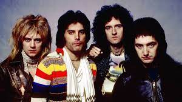
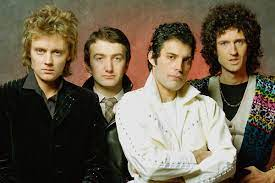
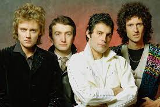

Los miembros fundadores de Queen se reunieron en el oeste de Londres a fines de la década de 1960. El guitarrista Brian May había construido su propia guitarra con su padre en 1963 y formó el grupo 1984 —llamado así por la novela de Orwell— al año siguiente con el cantante Tim Staffell.
Freddie Bulsara, que era de Zanzíbar y de ascendencia india parsi, habia estudiado diseño de modas y pregunto si podia unirse a la banda.
Bulsara sugirio cambiar el nombre inicial de la bada "Smile" a "Queen" y Al mismo tiempo, decidió cambiar su apellido a Mercury, inspirado en la frase «Madre Mercury, mira lo que me han hecho» en la canción «My Fairy King».
 
twitter

twitter